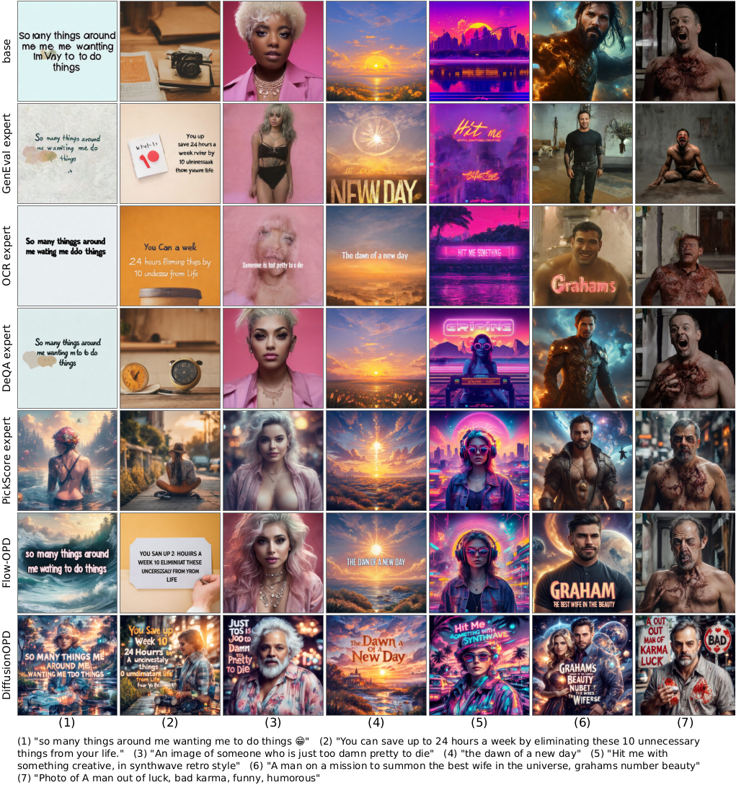
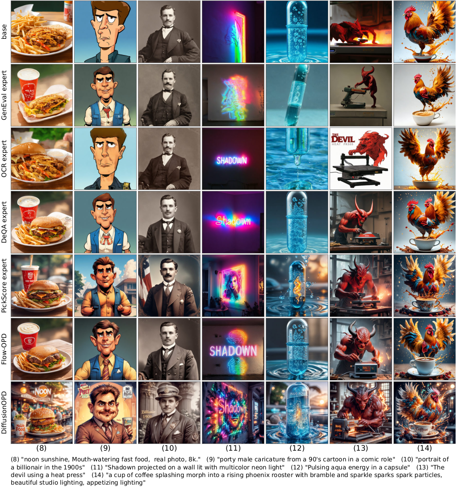

Spillover examples
Prompt words rendered as image text
These prompts neither request nor forbid text in the image. The figures below collect cases where words from the prompt are nevertheless drawn into the picture.


Capability integration and trajectory compression, trained together on the student’s own rollout.
1StepFun·2Westlake University
Spillover examples
These prompts neither request nor forbid text in the image. The figures below collect cases where words from the prompt are nevertheless drawn into the picture.

